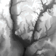

|
| [Up] |
SELECT MARRAY x IN [0:6,0:2] VALUES CONDENSE + OVER y IN [0:3] USING a[x[0]+y[0]*7,x[1]] FROM salestable AS aThe first line selects a new, transient MDD object with the spatial domain [0:6,0:2] which will contain the result, and the index x which will iterate over all values in this domain. The second line defines what values this MDD object will contain. x and y are vectors in the domains specified by the IN command following their declaration, i.e. x[0] = 0, ... ,6 , x[1] = 0, ... ,2 and y[0] = 0, ... ,3. CONDENSE + OVER y in [0:3] USING f(y) adds up the values f(y) and a[x[0] + 7*y[0], x[1]] are the sales for product number x[1] in week number y[0] and weekday number x[1]. Therefore the total sales over all 4 weeks are calculated for each product and weekday .
SELECT MARRAY x IN [0:3,0:2] VALUES CONDENSE + OVER y IN [0:6] USING a[x[0]*7+y[0],x[1]] FROM salestable AS awhich is identical to the one in Example 1 except that the intervals for x[0] and y[0] have been exchanged.
SELECT MARRAY n IN [0:5] VALUES CONDENSE + OVER x IN [0:455] USING img[x[0],250]/50c = n[0] FROM rockies AS imgThe resulting histogram has 6 entries giving the number of pixels in the range [50*i, ... , 50*i+49], i=0, ... ,5. img[x[0],250]/50c = n[0] is a boolean expression which is interpreted as an integer result, i.e. 1 for TRUE and 0 for FALSE; therefore MARRAY[i] is assigned the number of pixels where (pixel / 50) equals i.
SELECT MARRAY x IN [0:109,0:109] VALUES img[ x[0]*4, x[1]*4 ] FROM rockies AS imgHere's a picture of the resulting image. Click here to view the original.

| [Up] |
17-Jul-98